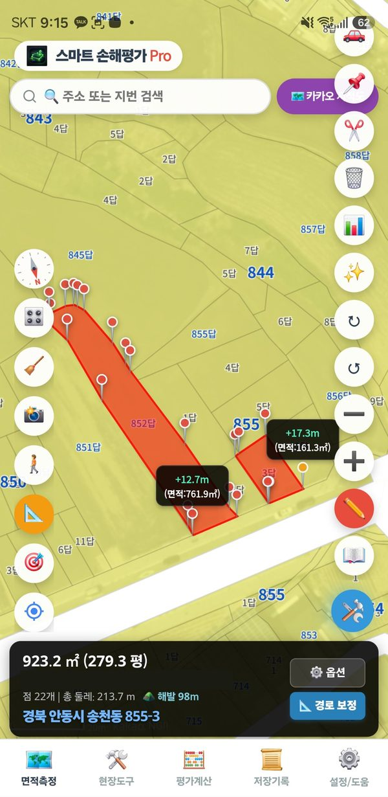

Desenha o limite cadastral de um lote com um toque, sem tocar nos cantos. Pro Coreia · Brasil
Mesmo que já haja outras áreas desenhadas, o toque longo adiciona o lote como área nova.

Depois de desenhar aparece no topo um resumo de uma linha: toque nele (ou em «Detalhes ▾») para ver a ficha completa e em «▴» para recolher. «ℹ️» abre a ficha completa. Use ‹ › para trocar de área. «🕘 Imagens de satélite anteriores» muda o mapa para fotos antigas do mesmo lugar (Esri por data).
No Brasil a lista de mapas mostra «🇧🇷 Imóveis CAR (Brasil)», que sobrepõe os limites do CAR à imagem de satélite. Ative «✨ Lote auto» e toque num imóvel para desenhá-lo; a ficha ℹ️ mostra área declarada, município/UF, situação, tipo, módulos fiscais, data de cadastro e código. Os limites do CAR são declarados pelo proprietário e podem diferir da realidade.
Se só parte do lote é cultivada ou o limite não bate com a realidade, ajuste com «✂️ Edição de pontos»: toque na linha da borda para adicionar um ponto e arraste os pontos para movê-los. Veja Edição de pontos.
Se você também desenhar o mesmo lote caminhando, a parte sobreposta é contada uma só vez.